Arquitectura orientada a servicios (SOA)
Muchas empresas han dedicado grandes inversiones en los recursos de sus sistemas software a lo largo de los años. Dichas empresas tienen una enorme cantidad de datos almacenados en sistemas de información (EIS) legacy, de forma que no resulta práctico descartar dichos sistemas existentes. Es mucho más efectivo evulucionar y mejorar los EIS. ¿Pero cómo hacer ésto? La arquitectura orientada a servicios (Service Oriented Architecture) proporciona una solución con unos costes aceptables. Si bien la arquitectura a servicios no es nueva, se está convirtiendo en el principal framework para la integración de entornos heterogéneos y complejos. En esta charla, explicaremos con detalle qué es la arquitectura orientada a servicios.
Razones para introducir SOA
El software de empresa está estrechamente relacionado con su organización interna, con los procesos que la forman, y con el modelo de negocio de dicha empresa. El software de empresa está condicionado tanto por las dependencias entre sus departamentos, como por las relaciones con negocios externos. Consecuentemente, una arquitectura para software de empresas debe contemplar un gran número de requerimientos diferentes. Muchos de estos requerimientos entran en conflicto, mientras que otros no están claros. En casi todos los casos, los requerimientos cambian constantemente debido al cambio permanente de los mercados, cambios en la organización de la empresa, así como en sus objetivos de negocio. Esta implicación en todos los aspectos de la empresa y del negocio lo que hace que el software de empresa sea altamente complejo. Como dice Dirk Krafzig: "El software de empresa es un animal diferente". El software de empresa es único en muchos aspectos, y por lo tanto, requiere medidas únicas para asegurar la eficiencia de su desarrollo y mantenimiento.
En el software de empresa, el arquitecto adquiere el rol de un influenciador y controlador externo. Tiene la responsabilidad de dirigir proyectos software individuales tanto desde el punto de vista estratégico de la organización en su totalidad, como desde el punto de vista táctico (punto de vista de la meta a alcanzar con el proyecto individual). Tiene que equilibrar diferentes requerimientos a la vez que intentar crear un orden perdurable dentro del ámbito del software de empresa. La arquitectura del software de empresa es una de las herramientas más importantes con las que cuenta el arquitecto. Éste tiene que enfrentarse constantemente con cambios y adiciones de funcionalidades que incrementan la complejidad del sistema y reducen su eficiencia. Mediante la refactorización de las soluciones actuales, los arquitectos luchan para intentar reducir la complejidad e incrementar la agilidad del sistema.
Para mejorar la eficiencia y agilidad del sistema, una arquitectura de software de empresa debe proporcionar las siguientes características:
- Simplicidad: A pesar de la cantidad de gente implicada, todos deben ser capaces de comprender y gestionar la arquitectura en sus niveles respectivos (por ejemplo, especificar nuevas funcionalidades a nivel de negocio, implementarlas y mantenerlas).
- Flexibilidad y mantenibilidad: La arquitectura debe definir diferentes componentes que puedan reordenarse y reconfigurarse de una forma flexible. No se debe permitir que cambios locales tengan un efecto sobre el sistema global.
- Reusabilidad: Uno de los aspectos más importantes de la reusabilidad es la de compartir datos en tiempo real, así como el compartir funcionalidades comunes.
- Desacoplamiento entre funcionalidad y tecnología: La arquitectura debe hacer que la organización de la empresa sea independiente de la tecnología. En particular, la arquitectura debería evitar dependencias de productos y vendedores específicos.
Una arquitectura orientada a servicios posee las características que acabamos de comentar.
La meta última de la reusabilidad y flexibilidad proporcionada por una arquitectura orientada a servicios es el de conseguir una empresa ágil, en la que todos los procesos y servicios son completamente flexibles y pueden crearse, configurarse y reordenarse rápidamente cuando así sea requerido por los expertos en el negocio, sin la necesidad de personal técnico. Entre otras cosas, se facilita el dedicar más tiempo al mercado para conseguir nuevas iniciativas de negocio. Esta visión de una empresa ágil reconcilia la demanda cada vez más creciente de entornos de negocio rápidamente cambiantes, con las limitaciones de las teconologías e infraestructuras organizacionales actuales. Otras ventajas que se derivan de la agilidad de la empresa son el ahorro de costes, independencia de la tecnología, un proceso de desarrollo más eficiente, y mitigación de riesgos.
El concepto de servicio
El término "servicio" se ha venido utilizando desde hace bastante tiempo y de muchas formas diferentes. Hoy, por ejemplo, encontramos grandes compañías, como por ejemplo IBM, que promocionan el concepto de "servicios bajo demanda". Con la llegada del siglo 21, el término "servicios Web" se ha convertido extremadamente popular, si bien ha sido utilizado a menudo para hacer referencia a diferentes conceptos de computación. Por ejemplo, algunos lo utilizan para refererirse a servicios de aplicaciones que se ofrecen a los usuarios a través de la Web, como la aplicación salesforce.com. Otros utilizan el término "servicios Web" como módulos de aplicaciones que son accesibles para otras aplicaciones a través de Internet, mediante protocolos basados en XML. Hay que decir que servicios Web y SOA NO son equivalentes, sin embargo, como veremos más adelante, se pueden utilizar servicios Web para implementar una arquitectura SOA.
Para nosotros, el término servicio hará referencia a alguna actividad significativa que un programa de ordenador realiza o solicita a otro programa de ordenador. O, en términos más técnicos, un servicio es un módulo de aplicación autocontenido que es remotamente accesible. Los frontends de las aplicaciones proporcionan accesibilidad a los servicios. A veces, los términos "cliente" y "servidor" se utilizan como sinónimos de "consumidor de un servicio" y "proveedor de un servicio", respectivamente.
Ademas, los servicios proporcionan un nivel de abstracción que oculta muchos detalles técnicos, incluyendo la localización y búsqueda del servicio. Típicamente, los servicios proporcionan funcionalidad de negocio, en lugar de funcionalidades técnicas. Otra característica de los servicios es que no se diseñan para un cliente específico, en su lugar constituyen una facilidad que contribuye a satisfacer alguna demanda pública. Es decir, proporcionan una funcionalidad que puede reutilizarse en diferentes aplicaciones. La "rentabilidad" del servicio dependerá del número de clientes diferentes que utilicen el servicio, o lo que es lo mismo, del nivel de reutilización conseguido.
Una implementación concreta de una arquitectura de servicios proporciona un acceso uniforme para todos los servicios disponibles. Así, si hacemos una analogía con la telefonía, después de que un consumidor de un servicio es "dirigido" hasta una instancia de una arquitectura de servcios, y, después de que "suene el tono de llamada", el uso de los servicios es transparente para los usuarios. Sin embargo, y como luego veremos, una arquitectura de servicios es una arquitectura en sí misma, y por lo tanto, únicamente describe la estructura y no las tecnologías concretas. Consecuentemente, las instancias de SOA podrían utilizar diferentes tecnologías en diferentes empresas.
Destacar también que los principios en los que se basa SOA son significativamente diferentes de los principios y paradigmas orientados a objetos. La diferencia clave está en que las interacciones entre los servicios se definen utilizando interfaces que están más orientadas hacia los datos que al comportamiento. Un servicio aislado puede ser implementado utilizando principios y técnicas orientadas a objetos, sin embargo, las interacciones entre estas interfaces se orientan más hacia intercambios basados en documentos. Mientras que la orientación a objetos mantiene el comportamiento "cerca" de los datos (un objeto encapsula datos y comportamiento), la orientación a servicios desacopla los datos del comportamiento. Pongamos un ejemplo sencillo: imaginemos un CD que queremos escuchar. Para poder oirlo necesitamos introducir el CD en un reproductor de CD y dicho reproductor realiza la tarea de reproducción. El reproductor de CD ofrece un servicio de reproducción de CDs. Ésto resulta muy útil ya que podemos reemplazar un reproductor de CD por otro: podemos ejecutar el mismo CD sobre un reproductor portátil o sobre un sofisticado equipo estéreo. Ambos aparatos ofrecen el mismo servicio, pero la calidad del mismo es diferente. Ahora consideremos el mismo ejemplo según la perspectiva orientada a objetos: en un estilo de programación orientado a objetos, cada CD debería contener su propio reproductor de forma no separada. Esto suena raro, pero esta es la forma en la que están construidos muchos sistemas software actuales.
El resultado de un servicio lleva consigo normalmente un cambio de estado para el consumidor, o para el cliente, o para ambos. Siguiendo con el ejemplo anterior, después de escuchar el CD en el reproductor, nuestro humor habrá cambiado, por ejemplo, de "triste" a "animado".
Definición de SOA. Elementos que la componen.
Una arquitectura orientada a servicios está basada en cuatro elementos clave: frontend de la aplicación, servicio, repositorio y bus de servicios (ver Figura 1).
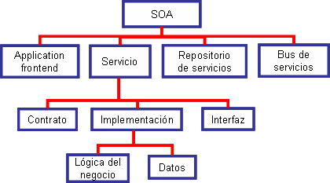
Si bien el frontend de la aplicación es el propietario del proceso del negocio, los servicios proporcionan la funcionalidad del negocio que los frontends de las aplicaciones y otros servicios pueden utilizar.
Un servicio consiste en: (a) una implementación que proporciona lógica del negocio y datos, (b) un contrato del servicio que especifica la funcionalidad, uso, y restricciones para el cliente (que puede ser un frontend de una aplicación u otro servicio), y (c) una interfaz del servicio que físicamente expone la funcionalidad.
El repositorio de servicios almacena los contratos del servicio de los servicios individuales de una SOA, y el bus de servicios interconecta los frontends de las aplicaciones y los servicios.
El concepto de una SOA se centra en la definición de una infraestructura de negocio. Cuando utilizamos el término "servicio" tenemos en mente un servicio de negocio tal como realizar una reserva de un vuelo, o acceder a una base de datos de clientes de una compañía. Estos servicios proporcionan operaciones de negocio tales como hacer una reserva, cancelar un billete, u obtener el perfil de un usuario. A diferencia de los servicios de negocio, los servicios de infraestructura técnica, tales como un servicio de persistencia o de transacciones, proporcionan operaciones tales como inicio de transacción, actualización de datos, o abrir cursor. Si bien este tipo de funcionalidad técnica es bastante útil cuando vamos a implementar una operación de negocio, tiene poca relevancia estratégica desde el punto de vista de SOA. De forma más general, la tecnología no debe tener ningún impacto sobre la estructura de alto nivel de la aplicación, ni debe provocar dependencias entre componentes. Realmente, la arquitectura orientada a servicios debe desacoplar las aplicaciones de negocio de los servicios técnicos y hacer que la empresa sea independiente de la implementación o infraestructura técnicas específicas.
Vamos a comentar con más detalle los elementos que componen la arquitectura SOA.
FRONTENDS de las aplicaciones
Los frontends de las aplicaciones son los elementos activos de la arquitectura SOA. Éstos inician y controlan todas las actividades de los sistemas corporativos. Hay diferentes tipos de frontends. Un frontend de una aplicación puede presentar una interfaz gráfica de usuario, como por ejemplo una aplicación Web o un cliente rico que interactúa directamente con los usuarios finales. Los frontends no tienen que interactuar necesariamente de forma directa con los usuarios finales. Los programas por lotes o los procesos de larga duración que invocan a las funcionalidades de forma periódica o como resultado de eventos específicos son también ejemplos válidos de frontends.
En última instancia, siempre es un frontend de una aplicación quién inicia un proceso de negocio y recibe los resultados. Los frontends de aplicaciones son similares a las capas de nivel más alto en las arquitecturas multi-capa tradicionales.
SERVICIOS
Un servicio es un componente software con un significado funcional que lo distinque de otros, y que típicamente encapsula un concepto de negocio de alto nivel. La Figura 2 muestra los elementos que forman parte de un servicio.
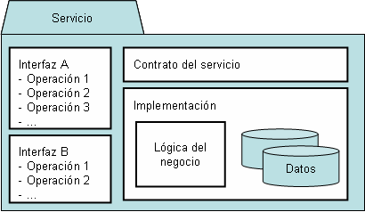
El contrato del servicio proporciona una especificación informal sobre el propósito, funcionalidad, restricciones, y uso del servicio. La forma de dicha especificación puede variar dependiendo del tipo de servicio. La definición formal de la interfaz basada en lenguajes tales como IDL y WSDL no es obligatoria. Si bien añade un beneficio significativo: proporciona una abstracción e independencia de la tecnología, incluyendo al lenguaje de programación, protocolo de red y entorno de ejecución. Es importante comprender que un contrato de un servicio proporciona más información que una especificación formal. El contrato puede imponer una determinada semántica sobre la funcionalidad o el uso de parámetros que no están sujetos a especificaciones IDL o WSDL. En realidad, muchos proyectos deben tratar con servicios que no pueden proporcionar una descripción formal de las interfaces de dichos servicios. No debemos olvidar que la tarea clave en un proyecto que pretende introducir SOA a nivel de empresa es a menudo, no implementar nuevas funcionalidades, sino identificar módulos existentes de aplicaciones y componentes y "envolverlos" con interfaces con el nivel adecuado de funcionalidad y granularidad, haciendo que éstos estén disponibles en forma de servicios fácilmente utilizables y mejor documentados. En los casos en los que no se disponga de una descripción formal de los servicios en forma de interfaces, el servicio puede proporcionar acceso a librerías, o bien una descripción técnica detallada a nivel de protocolo de red.
La interfaz expone la funcionalidad del servicio a los clientes que están conectados a dicho servicio a través de la red. Si bien la descripción de la interfaz forma parte del contrato del servicio, la implementación física de la misma consiste en unos stubs de servicio, que se incorporan en los clientes de un servicio.
La implementación del servicio proporciona la lógica del proceso así como los datos requeridos. Es la realización técnica que satisface el contrato del servicio. La implementación del servicio consiste en uno o más artefactos tales como programas, datos de configuración y bases de datos.
Los servicios son el corazón de una arquitectura SOA y deben ser: débilmente acoplados, de grano grueso (coarse-grained: implementan funcionalidades de alto nivel), centrados en el negocio y reutilizables.
El término acoplamiento hace referencia al grado en el que los componentes software dependen unos de otros. El acoplamiento puede tener lugar a diferentes niveles. Los procesos de negocio requieren un alto nivel de flexibilidad, y por lo tanto una arquitectura con un bajo acoplamiento para así poder reducir la complejidad total y las dependencias, y en consecuencia facilitar cambios más rápidos y con menores riesgos. En la siguiente tabla mostramos las diferencias fundamentales entre acoplamiento débil (loose coupling) y fuerte (tight coupling), considerando diferentes niveles.
| Nivel | Tight coupling | Loose coupling |
|---|---|---|
| Acoplamiento físico | Requiere conexión física directa | Utiliza un intermediario físico |
| Estilo de comunicación | Síncrono | Asíncrono |
| Sistema de tipos | Interfaz explícita con nombres de operaciones y argumentos fuertemente tipados | Formato de mensajes flexible |
| Patrón de interacción | Navegación a través de complejos árboles de objetos | Centrado en los datos, mensajes autocontenidos |
| Control de la lógica del proceso | Centralizado | Componentes distribuidos lógicamente |
| Descubrimento y enlazado de servicios | Estático | Dinámico |
| Dependencia de la plataforma | Dependencia fuerte del sistema operativo y lenguaje de programación | Independencia del sistema operativo y lenguaje de programación |
REPOSITORIO de servicios
El repositorio de servicios proporciona facilidades para encontrar servicios y adquirir toda la información para utilizar los servicios, particularmente si estos servicios deben encontrarse fuera del ámbito funcional y temporal del proyecto que los creó. Si bien mucha de la información requerida forma parte del contrato del servicio, el repositorio de servicio puede proporcionar información adicional, tal como la localización física, información sobre el proveedor, personas de contacto, tasas de uso, restricciones técnicas, cuestiones sobre seguridad, y niveles de servicio disponibles.
Estamos considerando repositorios de servicios utilizados principalmente dentro de los límites de una única empresa. Los repositorios que se utilizan para integración de servicios entre empresas típicamente tienen diferentes requerimientos. En particular, aquellos repositorios públicos a través de Internet pueden requerir cuestiones legales (términos y condiciones de uso), estilo de presentación, niveles de seguridad, registro de usuarios, suscripción a servicios, tarifas de uso, y versión utilizada).
Obviamente, un repositorio de servicios es un elemento muy útil de una SOA. Si bien no es indispensable disponer de un repositorio de servicios, éste resultará indispensable a largo plazo. Una arquitectura puede evitar el uso de un repositorio si el ámbito de un servicio es justamente un proyecto, si tiene muy pocos servicios, o si todos los proyectos son llevados a cabo por el mismo equipo de personas. En un escenario real, la mayoría de las veces habrá múltiples proyectos concurrentes, grupos de trabajo cambiantes, y una gran variedad de servicios.
Un repositorio de servicios puede ser arbitrariamente simple; en un extremo, podríamos no requerir usar ninguna tecnología. Un lote de contratos de servicio impresos localizados en una oficina y accesible por todos los proyectos es un repositorio de servicios válido. Sin embargo, hay mejores formas de proporcionar esta información, manteniendo la simplicidad del repositorio, como por ejemplo utilizar alguna base de datos propietaria que contiene datos administrativos y contratos de servicios más o menos formales para cada versión de un servicio.
En algunos casos, algunas compañías han desarrollado sus propias herramientas que automáticamente generan la descripción del servicio a partir de las definiciones formales de los servicios (por ejemplo un generador de HTML que toma un WSDL como entrada, similar al generador JavaDoc). Esto resulta particularmente útil si la definición formal del servicio se anota con información adicional sobre el servicio.
Es importante distinguir entre enlazado de servicios (binding of services) en tiempo de desarrollo y en tiempo de ejecución. El binding (utilizaremos los términos binding o enlazado indistintamente) hace referencia a la forma en la que las definiciones de los servicios y las instancias de los servicios son encontradas, incorporadas en la aplicación del cliente, y finalmente enlazadas a nivel de red.
Si los servicios son encontrados y enlazados en tiempo de desarrollo, las signaturas de las operaciones del servicio son conocidas con antelación, así como el protocolo de servicio y su localización física (o al menos el nombre exacto del servicio en un servicio de directorios). La Figura 3 describe un proceso en el que los servicios se encuentran en tiempo de desarrollo. En este caso, el desarrollador es responsable de localizar toda la información requerida en el repositorio de servicios para crear un cliente que interactúe correctamente con la instancia del servicio.
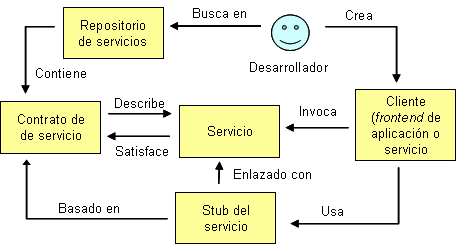
Si bien el enlazado en tiempo de desarrollo es un modelo bastante simple, es suficiente la mayoría de las veces. Permite a los proyectos identificar la funcionalidad que ha sido creada por proyectos anteriores y reutilizar sus servicios.
El enlazado en tiempo de ejecución es mucho más complejo. Podemos diferenciar entre varios niveles de enlazado:
- Búsqueda del servicio por nombre. Este es el caso más sencillo, y el usado más comunmente. La definición del servicio se conoce en tiempo dde desarrollo, y la lógica del cliente se desarrolla en consecuencia. El cliente puede enlazar de forma dinámica con diferentes instancias de un servicio buscandolas con nombres específicos dentro de un directorio. Por ejemplo, una aplicación cliente busca servicios de impresión con diferentes nombres, dependiendo del nombre de impresora seleccionado por el usuario.
- Búsqueda del servicio por propiedades. Es similar al anterior, excepto que los servicios se encuentran por propiedades. Por ejemplo, un servicio de impresión puede buscar en el repositorio impresoras a través de propiedades como la planta en la que se encuentran (p.ej. "planta ==2") y el tipo de documentos que es capaz de imprimir (p.ej. "doctype==PostScript").
- Búsqueda del servicio basada en reflection. En este caso, la especificación real del servicio no se conoce en tiempo de desarrollo. Supongamos que un cliente encuentra un servcio con las propiedades del ejemplo anterior, pero con una interfaz del servicio desconocida. En este caso, en el cliente se debe implementar algún mecanismo de reflection, que permita al cliente descubrir de forma dinámica la semántica del servicio y el formato de peticiones válidas. Este tipo de enlazado es bastante poco usual y limitado a algunos pocos dominios de aplicaciones. Un ejemplo de un dominio que realmente requiere un enlazado de servicios altamente dinámico es una aplicación Bluetooth: los clientes Bluetooth descubren los servicios de forma dinámica basándose en la localización y otras propiedades. Pero de nuevo, incluso en este escenario, los clientes Bluetooth soportan un conjunto limitado de servicios predefinidos.
En general, es recomendable tener un enlazado de servicios lo más simple posible debido a que el nivel de complejidad y riesgo crece exponencialmente con el nivel de dinamismo resultante. La búsqueda de servicios por nombre con interfaces de servicio predefinidas suele ser la opción que mejor equilibra las necesidades de flexibilidad y complejidad de implementación en la mayor parte de los casos.
BUS de servicios (ESB)
Un bus de servicios (ESB: Enterprise Service Bus) conecta a todos los participantes de una SOA (tanto servicios como frontends). El bus de servicios es similar al concepto de bus software definido en el contexto de CORBA. Aunque existen diferencias significativas, entre ellas la más importante es que el bus de servicios no necesariamente debe estar formado por una única tecnología, sino que puede comprender varios productos y conceptos.
Las principales características de un bus de servicios son:
- Conectividad: el objetivo principal de un bus de servicios es del de interconectar a los participantes de una SOA. Por lo tanto debe proporcionar facilidades para permitir a los participantes de una SOA invocar las funcionalidades de los servicios.
- Heterogeneidad de tecnología: puesto que la realidad de las empresas se caracteriza por tecnologías heterogéneas, el bus de servicios debe ser capaz de conectar participantes basados en diferentes lenguajes de programación, sistemas operativos o soporte de ejecución. Además, normalmente encontraremos muchos productos middleware y protocolos de comunicación en la empresa, todas las cuales deben ser soportadas por el bus de servicios.
- Heterogeneidad de conceptos de comunicación: es similiar a lo expuesto anteriormente pero aplicado a las comunicaciones. Obviamente, el bus de servicios debe permitir comunicaciones síncronas y asíncronas.
- Servicios técnicos: si bien el propósito del bus de servicios es fundamentalmente la comunicación, también debe proporcionar servicios técnicos tales como logging, auditorías, seguridad, transformación de mensajes o transacciones.
Capas en aplicaciones orientadas a servicios
Al igual que en cualquier aplicación distribuida, las aplicaciones orientadas a servicios son aplicaciones multicapa y tienen capas de presentación, lógica de negocio y persistencia. La Figura 4 muestra una arquitectura típica de una aplicación orientada a servicios.
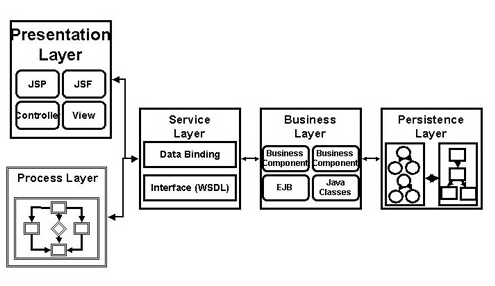
Las dos capas clave en una aplicación orientada a servicios son la de servicios y la de la lógica de negocio.
Capa de servicios
Como ya hemos dicho, los servicios son los bloques de construcción de las aplicaciones orientadas a servicios. Los servicios con auto-contenidos, mantienen su propio estado, y proporcionan una interfaz con bajo acoplamiento.
El mayor reto cuando construimos una aplicación orientada a servicios es crear una interfaz con el nivel adecuado de abstracción. Cuando analizamos los requerimientos del negocio, tenemos que considerar cuidadosamente qué componentes software queremos construir como servicios. Generalmente, los servicios deberían proporcionar una funcionalidad con un alto nivel de abstracción (coarse-grained). Por ejemplo, un componente software que procesa una orden de compra es un buen candidato para ser publicado como un servicio, en contraposición con un componente que solamente actualiza un atributo de una orden de compra.
Tenemos dos posibilidades a la hora de construir un servicio: la aproximación top-down o bottom-up. La aproximación top-down requiere que identifiquemos y describamos los mensajes y las operaciones que proporciona nuestro servicio y a continuación implementemos dicho servicio. Esta aproximación es recomendable cuando estamos construyendo un servicio completamente nuevo, puesto que somos totalmente libres de elegir la tecnología de implementación que prefiramos. Esta aproximación también promueve servicios más interoperables, ya que podemos evitar artefactos de implementación que imposibiliten la interoperabilidad (por ejemplo, tipos de datos que pueden tener una representación interoperable).
La aproximación bottom-up es bastante popular debido a que nos permite reutilizar la inversión realizada en los componentes de negocio. Por ejemplo, los vendedores proporcionan las herramientas que nos permiten exponer procedimientos almacenados PL/SQL que comprueban si a un cliente se le puede aplicar un descuento como un servicio.
El aspecto más importante de un servicio es su descripción. Cuando utilizamos servicios Web como tecnología de implementación para una SOA, el Web Service Description Language (WSDL) describe los mensajes, tipos y operaciones del servicio Web, que constituyen el contrato de dichos servicios.
Capa de lógica de negocio
Otra "promesa" de SOA es que podemos construir nuevas aplicaciones a partir de servicios existentes. El principal beneficio que proporciona SOA es la estandarización del modelado de procesos de negocio, a menudo referido como orquestación de servicios. Podemos construir una capa de abstracción basada en servicios Web sobre sistemas legacy y posteriormente beneficiarnos de este hecho para ensamblar procesos de negocio. Adicionalmente, los vendedores de plataformas SOA proporcionan herramientas y servidores para diseñar y ejecutar estos procesos de negocio. Este esfuerzo se ha materializado en un estándar en OASIS denominado Business Process Execution Language (BPEL); la mayoría de vendedores de plataformas se están adhiriendo a este estándar. BPEL es esencialmente un lenguaje de programación pero su representación es XML.
Si bien la sintaxis BPEL es bastante sencilla, es preferible una representación gráfica de un proceso de negocio, de esta forma nos beneficiaremos de una herramienta de diseño GUI para ensamblar nuevos procesos de negocio a partir de servicios existentes.
El gobierno SOA (SOA governance)
La definición de la palabra "gobierno" (governance) implica la acción o forma de gobernar. Dentro del contexto de las IT (Information Technology), además, representa un marco de toma de decisiones y responsabilidades que fomenta un comportamiento deseable en las IT. Los participantes en el gobierno deciden políticas sobre diferentes categorías de decisiones que deben realizarse. Dichos participantes también llevan a cabo la identificación de roles entre la gente que conforma la empresa. Los miembros del grupo de gobierno también identifican a los expertos en diferentes materias de quienes se espera que proporcionen las "entradas" para acordar decisiones, así como identifican al grupo de gente que debe tener ejercer sus responsabilidades (basadas en sus roles). Un equipo de gobierno de IT debe tratar tres cuestiones:
- ¿Qué decisiones debemos tomar para asegurar una gestión y uso efectivos de la IT?
- ¿Quién debe tomar dichas decisiones?
- ¿Cómo se van a tomar dichas decisiones y cómo pueden monitorizarse?
La importancia de las IT y el gobierno SOA
Actualmente, las IT son el elemento más omnipresente dentro de una empresa. Una organización que posee algo tan importante para el crecimiento y éxito del negocio debe considerarlo como uno de los elementos clave de la empresa. Un bien tan valioso debe ser entendido completamente, no sólo para maximizar los beneficios que pueden derivarse de él, sino para poderlo gestionar de forma adecuada y, consecuentemente, mitigar los riesgos asociados con él. Todo ello plantea la necesidad de establecer una forma de gobierno para formular, controlar y vigilar el mantenimiento y creciemiento adecuados de dicha posesión valiosa para la empresa, es decir es necesario establecer un gobierno para las IT.
SOA es como un vino viejo en una botella nueva. Los conceptos de SOA ya existen desde hace bastante tiempo en la industria de las IT. Pero es sólo recientemente que ha captado la atención como forma de alinear la estrategia del negocio y los imperativos de una empresa con sus iniciativas de IT. Lo que hace que una empresa que hace uso de SOA necesite tomarse en serio el gobierno es la naturaleza distribuida de los servicios entro varios LOBs ( Lines of Business). La proliferación de más partes "movibles" (es decir, los bloques de construcción en forma de servicios) que necesitan ser mantenidos por las diferentes organizaciones hace que la atividad que hemos denominado como gobierno se plantee como un reto. La naturaleza inter-organizacional de los servicios de negocio y la potencial composición de servicios a través de las "fronteras" de las organizaciones puede funcionar correctamente si y sólo si los servicios son gobernados eficientemente para que así estén conforme a los requerimientos dictados por un determinado nivel de satisfacción requerido para factores tales como la seguridad, fiabilidad, rendimiento, etc. El proceso de identificar, especificar, crear, y finalmente desplegar los servicios de la empresa, por lo tanto requiere de un gobierno SOA a través de un grupo "fuerte" y eficiente que vigile el ciclo de vida en su totalidad de una cartera de servicios de una empresa.
Responsabilidades de gobierno
El rol de las IT en la empresa deber ser comprendido en su totalidad y monitorizado cuidadosamente. Para ello los stakeholders de la compañia necesitan asegurar que las inversiones en IT de sus organizaciones soportan la estrategia del negocio en su totalidad, así como mitigar sus riesgos potenciales. Las responsabilidades más importantes de un cuerpo de gobierno se muestran en la Figura 5.
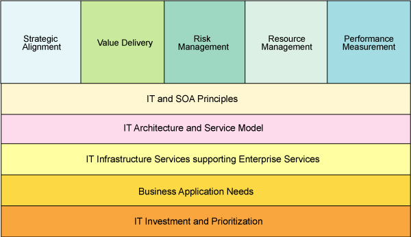
Las principales áreas de gobierno incluyen las siguientes:
- El alineamiento estratégico se centra en la necesidad de alinear la visión del negocio, los objetivos y las necesidades con los esfuerzos en IT.
- El valor de la entrega hace referncia a cómo el valor de una IT puede medirse a través de los resultados como por ejemplo el aprovechamiento, la reducción de gastos, la reducción de errores, la mejora de imagen de la compañia, etc.
- La gestión de riesgos se centra en la continuidad del negocio y las medidas a tomar para proteger los bienes referentes a las IT.
- La gestión de recursos se centra en optimizar los servicios de infraestructura que soportan los servicios de las aplicaciones.
- La gestión del rendimiento se centra principalmente en monitorizar los servicios que se ejecutan en el entorno de infraestructura de la empresa u otros entornos de infraestructura.
Un metamodelo de gobierno que ilustra la interrelación entre las cinco decisiones más importantes a las que hacen referencia las áreas que acabamos de mencionar, se muestra en la Figura 6.
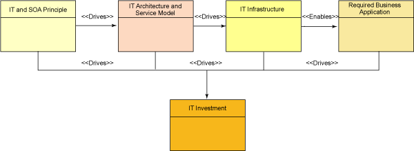
La Figura 5 muestra los principales elementos de gobierno y sus relaciones entre ellos. Los principios de IT y SOA guían la arquitectura de las IT y el modelo de servicios, los cuales, a su vez, determinan cómo deben definirse los servicios de infraestructura de las IT de la empresa. Las necesidades de las aplicaciones de negocio requeridas pueden evaluarse basándonos en la capacidad del marco de infraestructuras de las IT. La madurez de la arquitectura de las IT y el modelo de servicios, así como los servicios de infraestructura de las IT condicionan la decisión de qué partes de de las aplicaciones de negocio requeridas pueden priorizarse para realizar inversiones de IT sobre ellas.
Implementación del gobierno
Cualquier implementación del gobierno debería centrarse en los cuatro pilares de una arquitectura de empresa: la gente, los procesos, la tecnología, y los servicios. Una implementación de gobierno SOA necesita ser soportada por una organización jerárquica, como por ejemplo la mostrada en la Figura 7.
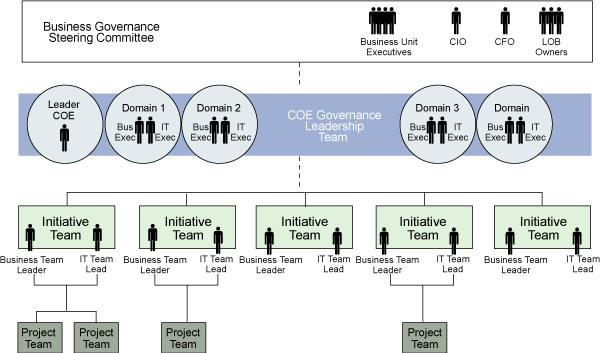
El nivel de dirección. Está formado por miembros del comité de dirección. El comité de dirección articula la estrategia de negocio y los objetivos de la empresa. Los participantes en este nivel deciden cómo se deben realizar las inversiones en IT y cómo deben canalizarse a áreas específicas del negocio que necesitan mejoras, o bien necesitan implementar nuevas aplicaciones que puedan marcar la diferencia en el mercado y hacer que la empresa se más competitiva.
El nivel de liderazgo. Está formado por los líderes del gobierno y de cada uno de los dominios del negocio. Este grupo crea la arquitectura IT de la empresa y los principios SOA que deben seguirse.
El nivel de gestión de oportunidades. En este nivel se forman grupos separados. Cada uno de ellos se centra en una o más necesidades del negocio y son responsables de proporcionar definiciones claras de las aplicaciones del negocio que cubren algunas de las necesidades de la empresa.
El nivel de gestión de proyectos. Los grupos en este nivel gestionan el ciclo de vida en su totalidad de una aplicación (diseño, desarrollo, construcción, pruebas y despliegue).
SOA y JBI
JBI (Java Business Integration es un estándar basado en Java que aborda las cuestiones principales sobre EAI y B2B, y que está basado en los paradigmas y principios que defiende SOA. La versión actual (1.0) lleva el nombre de JSR (Java Specification Request) 208. Tanto los vendedores comerciales como los open source han comenzado ya a utilizar JBI como un estándar de integración en sus productos ESB.
JBI define una arquitectura basada en plug-ins en la que los servicios pueden ser plugged en el entorno de ejecución de JBI. JBI proporciona interfaces bien definidas para los servicios que interactúan con el entorno de ejecución JBI. Los servicios necesitan exponer sus interfaces al entorno JBI para que éste pueda enrutar los mensajes hacia los servicios. El entorno de ejecución JBI actúa como un mediador entre los servicios que están desplegados en dicho entorno (ver Figura 8)
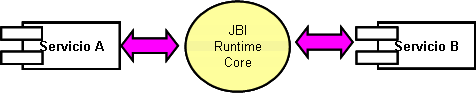
El núcleo (core) del entorno de ejecución JBI está formado por los siguientes componentes dentro de la misma máquina virtual Java (JVM):
- Framework de componentes: permite el despliegue de diferentes tipos de componentes en el entorno de ejecuión JBI.
- Router de mensajes normalizado: permite un mecanismo estándar de intercambio de mensajes entre los servicios.
- Framework de gestión: está basado en JMX y permite el despliegue, gestión y monitorización de componentes en el entorno JBI
JBI adopta SOA para maximizar el desacoplamiento entre componentes, y crear una semántica de interoperación bien definida basada en mensajería estándar. JSR 208 describe las interfaces proveedoras de servicios (SPI: Service Provider Interfaces), que las máquinas de servicios (no definidas por JSR 208) y los bindigns incorporan, así como el servicio de mensajes normalizado que utilizan para comunicarse entre ellos. JSR 208 tiene las siguientes ventajas de negocio:
- Es en sí misma una arquitectura orientada a servicios, y por lo tanto altamente flexible, extensible y escalable
- Las máquinas de servicios podrían implementarse en cualquier lenguaje siempre y cuando soporten la definición SPI implementada por los sistemas que cumplen JSR 208.
- Pueden añadirse nuevas máquinas en el contenedor definiendo los mensajes que utilizarán para interactuar con el resto del sistema.
- Las interfaces abiertas permiten una competencia gratuita y abierta alrededor de la implementación de estas máquinas. ESto significa que los clientes son libres de elegir la mejor solución disponible, y su código de integración puede migrarse entre las implementaciones.
En la Figura 9 se muestra un ejemplo de arquitectura JSR 208:
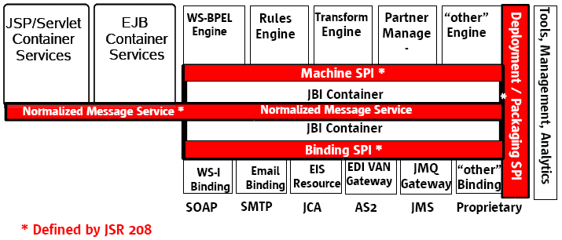
Como se puede observar, JBI proporciona un entorno en el que residen los componentes plug-in. La interacción entre los componentes plug-in se lleva a cabo mediante la invocación de servicios basada en mensajes. Los servicios producidos y consumidos por los componentes plug-in se modelan utilizando WSDL 2.0. Un mensaje normalizado está formado por dos partes: el mensaje abstracto XML, y los metadatos del mensaje (o datos del contexto del mensaje), lo cual permite la asociación de información extra con un mensaje particular ya que éste es procesado por los componentes del sistema y los componentes plug-in.
Los elementos clave de un entorno JBI (mostrados en la Figura 10) son:
- Máquinas de servicios (SE: Service Engines), son componentes JBI que permiten una lógica de negocio pluggable.
- Componentes de enlazado (BC: Binding Components), son componentes JBI que permiten una conectividad externa pluggable.
- El enrutador normalizado de mensajes (NMR: Normalized Message Router), direcciona los mensajes normalizados desde los componentes de origen hasta sus destinatarios de acuerdo a políticas especificadas.
- El entorno de ejecución JBI (JBI Runtime Environment, contiene a los componentes JBI y al NMR. Debido a sus características como contenedor, a menudo se le conoce con el nombre de meta-contenedor JBI.
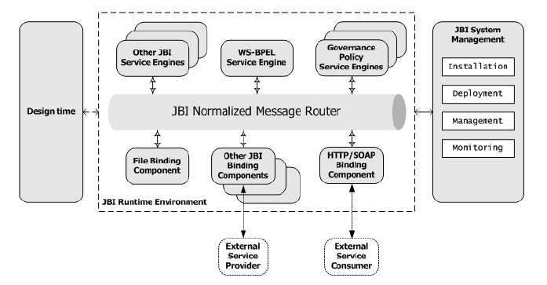
Modelo de componentes JBI
JBI define dos tipos de componentes:
- Componentes de la máquina de servicios (SE: Service Engine): se trata de componentes responsables de la implementación de la lógica del negocio y otros servicios. Los componentes SE pueden ser implementados internamente utilizando varias tecnologías y principios de diseño. Los componentes SE pueden ser tan simples como un componente que porporciona servicios de bajo nivel tales como transformación y traslación de datos o algo más complejos como una instancia WS-BPEL que modela un intrincado proceso de negocio.
- Componentes de enlazado (BC: Binding components): se utilizan principalmente para proporcionar enlaces a nivel de transporte para los servicios desplegados. Los BC pueden ser de varios tipos, incluyendo: (a)los que permiten la comunicación remota con sistemas externos utilizando protocolos de transporte estándar; (b) los que permiten una invocación dentro de la máquina virtual entre dos servicios desplegados en la misma JMV; y (c) los que permite la comunicación entre servicios utilizando ficheros de configuración WS-I (Web Services Interoperability).
El aspecto clave de JBI es el desacoplamiento de la máquina de servicios y los componentes de enlazado para que la lógica de negocio no se "infeste" con los detalles de infraestructura requeridos para invocar y consumir servicios. Esto promueve una arquitectura flexible y extensible. Tanto los componentes BC como los SE pueden actuar como proveedores y/o consumidores de servicios, así como aceptar/enviar mensajes desde/hasta el entorno de ejecución JBI.
Modelo de mensajes JBI
JBI utiliza un modelo de mensajes que desacopla los consumidores de servicios de los proveedores de servicios. El modelo de mensajes se define utilizando WSDL. WSDL se utiliza para describir las operaciones expuestas por los componentes SC y BC. WSDL también se utiliza para defnir los bindings a nivel de transporte para las operaciones abstractas de los servicios.
NMR (Normalized Message Router es otro de los componente fundamentales utilizado en la arquitectura de JBI. NMR proprciona la espina dorsal construida alrededor de WSDL, quien proporciona el intercambio de mensajes débilemete acoplados entre los compoentes SE y BC desplegados dentro de JBI. Se requiere que los servicios tengan interfaces, formados por un conjunto de operaciones. Cada operación está formada por uno o más mensajes. Un interfaz puede tener uno o más bindings a nivel de transporte.
SOA y Servicios Web
Muchos desarrolladores piensan a menudo que los servicios Web y SOA son sinónimos. Muchos también piensan que no es posible construir aplicaciones orientadas a servicios sin utilizar servicios Web. Para clarificar las diferencias diremos que SOA es un principio de diseño, mientras que los servicios Web son una tecnología de implementación. Por lo tanto, podemos construir una SOA utilizando otras tecnologías tradicionales, como por ejemplo RMI.
Tenemos que destacar que el precursor de SOA es Jini: un entorno de computación distribuida basada en Java y desarrollada por Sun a finales de los 90, en la que los dispositivos (como por ejemplo impresoras, portátiles y PDAs) pueden ser plugged en una red y automáticamente ofrecer sus servicios y hacer uso de otros servicios en dicha red. Posteriormente los servicios Web utilizan estándares independientes de la plataforma tales como HTTP, XML, SOAP, y UDDI, permitiendo la interoperabilidad entre tecnologías heterogéneas tales como J2EE y .NET.
En 2003, SOA entra al fin por completo en el mundo de las tecnologías de la información empresariales, a través de los servicios Web, y gracias a:
- Al contrario que CORBA y DCE, los estándares de servicios web no tienen detractores entre los fabricantes.
- Los servicios Web tienen flexibilidad para soportar aplicaciones multicanal.
- La capacidad de SOAP de atravesar los firewalls, aprovechando la ubicuidad del HTTP.
- El soporte de servicios Web en servidores de aplicaciones que albergan lógica empresarial.
- Los ESBs, que combinan servicios Web con middleware orientado a mensajes (MOM), más algunas capacidades de transformación y enrutado.
SOA está emergiendo como el principal marco de integración en entornos de computación complejos y heterogéneos. Los intentos anteriores no permiten soluciones interoperables abiertas, ya que recaen sobre APIs propietarios y requieren un alto nivel de coordinación entre grupos de trabajo. SOA puede ayudar a las organizaciones a modernizar sus procesos para que sus negocios sean más eficientes, así como adaptarlos a las necesidades de cambio y ser más competitivos, gracias al concepto de servicio. eBay, por ejemplo, ha "abierto" los APIs de sus servicios Web de sus subastas online. El objetivo es permitir a los desarrolladores ganar dinero a través de la plataforma eBay. Utilizando los nuevos APIs, los desarrolladores pueden construir aplicaciones cliente que enlacen con el sitio online y permitir que las aplicaciones acepten ítems que se pondrán a la venta. Tales aplicaciones suelen interesar a vendedores, ya que los compradores todavía utilizan ebay.com para pujar sobre los items. Este tipo de estrategia, por lo tanto, incrementará la base de clientes de eBay.
Aunque una SOA se podría implementar sin servicios Web, siendo realistas, cualquier proyecto SOA realizado en los últimos años está plagado de ellos. Es más, la mayoría de los clientes empiezan a practicar con SOA creando un servicio Web, muchas veces sobre lógica de negocio ya existente.
Una de las principales ventajas de implementar una SOA con servicios Web es que los servicios Web están muy extendidos y constituyen una plataforma sencilla y sobre todo neutral.
La arquitectura básica de los servicios Web (mostrada en la Figura 11), consiste en especificaciones (SOAP, WSDL, y UDDI) que soportan la interacción de un servicio Web que realiza una solicitud (servicio Web cliente) con un servicio Web que suministra el servicio requerido y con un registro de servicios (directorio de servicios Web). El suministrador publica una descripción WSDL de su servicio Web, y el solicitante accede a dicha descripción utilizando UDDI u otro tipo de registro, y solicia la ejecución del servicio del suministrador enviandole un mensaje SOAP.
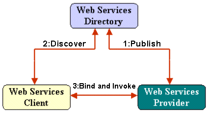
La combinación de servicios Web y SOA proporciona una integración rápida. Consideremos un ejemplo con tres aplicaciones de bases de datos de la industria de las finanzas que soportan préstamos bancarios, operaciones comerciales y operaciones de inversiones bancarias. Supongamos que dichas aplicaciones se han desarrollado utilizando una arquitectura clásica de tres capas, separando la lógica de la presentcaión, la lógica del negocio, y la lógica de la base de datos.
Tal y como se muestra en la Figura 12, es posible reutilizar una aplicación tradicional de tres capas como una aplicación orientada a servicios creando servicios a nivel de la capa de lógica de negocio e integrando dicha aplicación con otras aplicaciones utilizando el bus de servicios. Otro beneficio de la orientación a servicios es que es más fácil separar la lógica de presentación de la lógica del negocio cuando la capa de lógica de negocio está preparada para soportar servicios. También es más fácil conectar varios tipos de GUIs y dispositivos móviles con la aplicación cuando la capa de lógica de negocio soporta servicios. En lugar de ejecutar la lógica de la capa presentación como una interfaz altamente acoplada sobre el mismo servidor, la lógica de presentación puede situarse sobre un dispositivo separado, y la comunicación con la aplicación puede realizarse a través del bus de servicios.
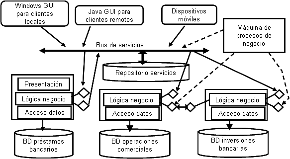
Otro aspecto importante es que las apliaciones pueden intercambiar datos más fácilmente utilizando un servicio Web definido en la capa de lógica de negocio que utilizando otra tecnología de integración diferente debido a que los servicios Web representan un estándar común entre todos los tipos de software. XML puede utilizarse independientemente de la definción de los tipos de datos y estructuras. Finalmente, el desarrollo de puntos de entrada orientados a servicios en la capa de lógica de negocio permiten a una máquina de gestión de procesos de negocio llevar a cabo un flujo automático de ejecución a través de los múltiples servicios.
SOA y BPM
Un proceso de negocio es una actividad del mundo real consistente en un conjunto de tareas lógicamente relacionadas que, cuando se ejecutan en la secuencia adecuada, y de acuerdo con unas correctas reglas de negocio, produce una salida para el negocio. Los procesos de negocio pueden durar minutos u horas, o incluso semanas, meses o años.
La gestión de procesos de negocio (BPM: Business Process Management) aborda el problema de cómo las organizaciones pueden identificar, modelar, desarrollar, desplegar y gestionar sus procesos de negocio, incluyendo a los procesos que implican a los sistemas de IT e interacciones humanas. BMP es un concepto que se utiliza desde hace mucho tiempo, que comenzó inicialmente con sistemas workflow y que ha derivado de forma progresiva en los modernos sistemas de orquestación y coreografía de servicios Web.
Los principales objetivos y beneficios de un BPM incluyen:
- Reducen las diferencias entre los requerimientos del negocio y los requerimientos de los sistemas IT permitiendo que los usuarios del negocio modelen los procesos de negocio, y dejando que el departamento de IT proporcione la infraestructura para ejecutar y controlar estos procesos de negocio.
- Incrementan la productividad de los empleados y reducen los costes operacionales automatizando y modernizando los procesos de negocio.
- Incrementan la agilidad y flexibilidad de la empresa separando explícitamente la lógica del proceso de otras reglas de negocio y representan los procesos de negocio de forma que es fácil cambiarlos a medida que los requerimientos del negocio cambian. Esto permite que las organizaciones sean más ágiles, ya que permiten responder rápidamente a los cambios del mercado y conseguir rápidamente un mayor poder competitivo.
- Reduce los costes de desarrollo y el esfuerzo usando un lenguaje de programación gráfico, de alto nivel, que permite a los analistas del negocio y a los desarrolladores construir de forma rápida y actualizar los sistemas IT dentro de un dominio particular del problema.
Obviamente, todos los sistemas IT soportan e implementan procesos de negocio de una forma u otra. Sin embargo, lo que hace único a la gestión de los procesos de negocio es que explícitamente separa la lógica de dichos procesos de negocio de otras reglas de negocio. De esta forma, la lógica del proceso se mantiene separada de las aplicaciones subyacentes y no está incluida en dichas aplicaciones, por lo tanto, resulta sencillo y rápido modificar los procesos de negocio a medida que los requermientos y las necesidades del negocio cambien.
Los primeros sistemas BPM definieron formatos propietarios para representar los procesos de negocio. Actualmente WS-BPEL proporciona una forma estándar para la composición de servicios, así como la orquestación y coreografía de servicios. Un proceso de negocio puede estar formado por una composición de servicios, y la composición de servicios es una tarea importante en SOA para proporcionar funcionalidades de negocio de grano grueso (coarse-grained).
La Figura 13 muestra la relación entre BMP y SOA:
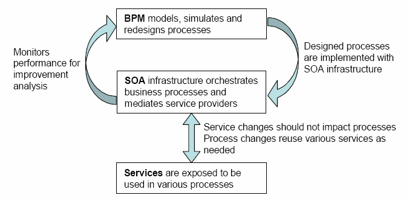